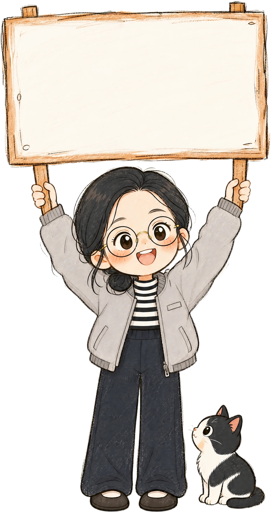

AI底层逻辑 · 反谄媚的最强工具
钢人论证（Steelman）

一句话说清楚
稻草人 = 把对方观点削弱了打；钢人 = 先把对方观点补到最强再判断。
双向钢人 = 让 AI 同时强化"你的观点"和"反对你的观点"各到最强——谄媚互相抵消，剩下的才是真分歧。
对比：稻草人 vs 钢人
straw man · 稻草人
削弱了再打
把对方观点歪曲成弱化版再攻击。
赢了的是面子，输掉的是认知——你以为驳倒了对方，其实只驳倒了自己捏的稻草人。
对比
steelman · 钢人
补到最强再判断
先把对方观点补到最强版本，再下判断。
过了钢人这一关还站得住的结论，才是真的站得住——赢的是真分歧。
双向钢人的结构（两路强化，汇到真分歧）：
来龙去脉
- straw man（稻草人谬误）→ 反造词 steelman（钢人论证）
- 内核古已有之：《论自由》"只知其一等于无知"（He who knows only his own side of the case knows little of that）
- 用途本质：AI 时代最强反谄媚工具
只知其一，等于无知。—— 密尔《论自由》第二章（已核对原文）
优化版 Prompt（吸收评论区批评）
先别急着回答，也别默认我把问题想清楚了。
请对这个问题做一次"双向钢人论证"：
1. 重述我真正想解决的问题——不是字面意思，是背后的真实困惑。如果我问错了问题，直接指出。
2. 钢人强化：①假设我是对的，给出最强论证；②给出反对它的最强替代方案（可能不止一个），
不留情面，写成独立报告，不许照顾我的面子。所有论证基于可核实的事实，没证据的标注[推测]。
3. 找出双方真正的分歧点，回答：如果只能改变一个假设就能翻转结论，那个假设是什么？
4. 只问我一个最关键的问题。等我回答后，再给明确判断、理由和下一步行动。
我的问题是：
[粘贴问题]
比原版强在三处（来自评论区）：
"反方"→"最强替代方案"避免硬造二元对立
证据约束 + [推测] 标注防"逻辑完整但事实悬空"
"独立报告、不留情面"对抗自己钢自己的软
三条使用规矩（比 Prompt 更重要 ·核心）
开关原则
只在"复杂 + 拿不准 + 代价大"时用。小事别上钢人，弊大于利。
提出：陆子男反方独立原则
同一个模型自己正说反说天然偏软。重大决定把反方报告贴到新对话/另一模型去攻击——双保险。
提出：王洛川人拍板原则
钢人提高的是思考质量，不保证结论真实性——很容易把"论证完整"误当"结论正确"。最后一步永远是：自己核对事实 + 自己拍板。
提出：LR + 陈恺晨边界
- 只保证"没把反方想弱"，不保证结论为真
- 修的是"立场锁定"（已有倾向需验证）；修不了"问题没问对"——那是 grill / 苏格拉底式提问的活
- 模型可能"表演钢人"（本质还是谄媚），重大事项配反方独立原则使用
触发词提醒：重大决策（花钱/发布/难回头）桑老哥说"钢人一下"时，按本词条的优化版 Prompt 执行双向钢人论证。
关联词条
来源
- 卡兹克《一个极度实用的深度思考 Prompt》（公众号"数字生命卡兹克"，2026-08；作者确认可转载）
- Reddit 原帖（作者转述，未直接回溯）[待核实]
- 《论自由》第二章引文（已核对原文）
- 评论区增量：陈恺晨 / 王洛川 / 陆子男 / gpt-5.6-sol 三条修订 / 硅基X档案优化版